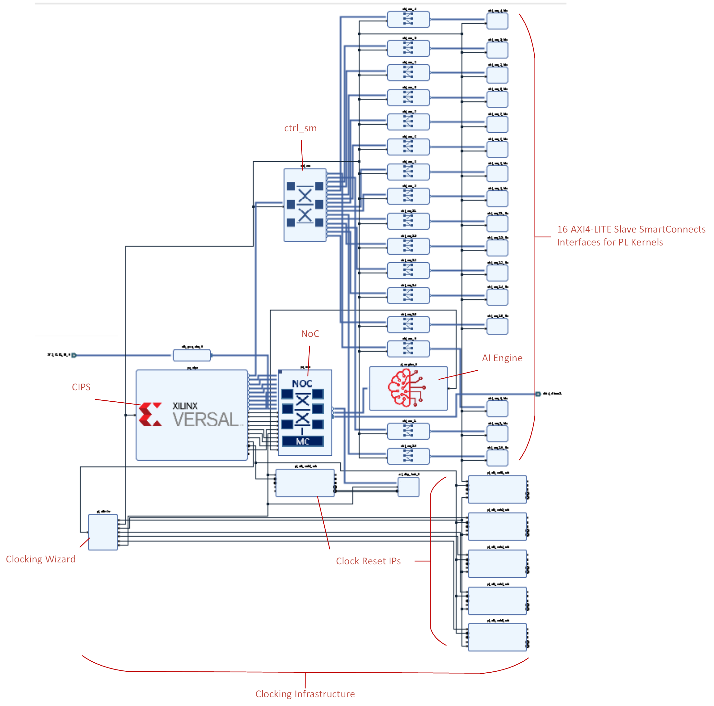

Building the Design¶
Create the custom platform by running the make step as follows. This creates a Vivado® project from the vck_190_v1_0_xsa.tcl provided and the Vitis™ bare-metal embedded project from the vck190_v1_0_pfm.tcl provided:
make platform
or
cd hw
vivado -mode batch -source vck190_v1_0_xsa.tcl -tclargs xcvc1902-vsva2197-1LHP-i-L
cd ../sw
xsct -nodisp -sdx ./vck190_v1_0_pfm.tcl vck190_v1_0 ../hw/vck190_v1_0.xsa build
Options Table¶
|Switch|Description| | — | — | |-mode batch -source vck190_v1_0_xsa.tcl| The Vivado Design Suite Tcl shell opens, runs the specified Tcl script, and exits when the script completes.| |-tclargs xcvc1902-vsva2197-1LHP-i-L|The -tclargs option allows you to pass arguments for the Tcl script you are running. The vck190_v1_0_xsa.tcl requires you to specify the device-package name.| |-nodisp|No display| |-sdx || |./vck190_v1_0_pfm.tcl vck190_v1_0 ../hw/vck190_v1_0.xsa build | Tcl script that takes in three arguments: platform name, XSA file, and output path.|
Dependencies¶
|Filename|Description| | — | — | |hw/vck190_v1_0_xsa.tcl|Creates Vivado project and exports platform.| |hw/src/dr.bd.tcl|Creates the block design in the platform Vivado project.| |hw/pfm_decls.tcl|Defines clock IDs to the output clock generated by the clocking wizard.| |hw/src/ddr4_dmc_3200_triplet_1.xdc|DDR4 memory constraints.| |hw/src/qor_scripts/pre_place.tcl|Calls the prohibitCascDspAcrossRbrk.tcl, prohibitCascBramAcrossRbrk.tcl, and prohibitCascUramAcrossRbrk.tcl before placement in the platform Vivado project.| |hw/src/qor_scripts/prohibitCascDspAcrossRbrk.tcl|Prohibits cascading of DSP resources to close timing.| |hw/src/qor_scripts/prohibitCascBramAcrossRbrk.tcl|Prohibits cascading of BRAM_18K and BRAM_36K resources to close timing.| |hw/src/qor_scripts/prohibitCascUramAcrossRbrk.tcl|Prohibits cascading of URAM resources to close timing.| |sw/vck190_v1_0_pfm.tcl|Creates a new platform by importing an XSA. Creates and configures an aiengine, xrt, and standalone domain in the platform.| |sw/src/qemu/aie/pmc_args.txt|File with all pmcqemu args listed. This is used to start pmcqemu.| |sw/src/qemu/aie/qemu_args.txt|File with all PS QEMU args listed. This is used to start PS QEMU.| |sw/src/boot/|Directory which has all the files listed in file names provided as part of the qemu-args and pmuqemu-args options. It is the directory to generate components after the Linux image build.| |sw/src/a72/xrt/image|For domains with Linux as the OS, use pre-built Linux images from this directory when creating the PetaLinux project. This option is valid only for Linux domains.| |sw/src/a72/xrt/linux.bif|BIF file used to create boot image for Linux boot.| |sw/src/qemu/lnx/pmc_args.txt|File with all pmcqemu args listed. This is used to start pmcqemu.| |sw/src/qemu/lnx/qemu_args.txt|File with all PS QEMU args listed. This is used to start PS QEMU.|
Build Products¶
|Filename|Description| | — | — | |hw/build/NOC_Power.xpe| Power estimates generated from the Vivado command.| |hw/build/vck190_v1_0.xsa|Hardware platform exported from platform Vivado project. Also known as hardware specification file.| |hw/build/vck190_v1_0_vivado/|Platform Vivado project folder.| |hw/build/vivado.log| Vivado log. | |hw/build/vivado.jou| Vivado journal. | |sw/build/vck190_v1_0/| Folder generated from the XSCT command. Contains the final platform file vck190_v1_0.xpfm used by the Vitis software platform later on.|
Introduction: What is a Custom Vitis Embedded Platform?¶
A platform is the starting point of any Vitis design. Vitis applications are built on top of the platforms. Xilinx provides pre-built base platforms at the Xilinx download center. The source code of these base platforms is available through the Xilinx GitHub site.
In this beamforming tutorial, a custom Vitis embedded platform is created from scratch. An embedded platform includes a hardware platform and a software platform.
What is the Hardware Platform?¶
The hardware platform is the static, unchanging portion of your hardware design. It includes the Xilinx support archive (XSA) file exported from the Vivado Design Suite. The hardware platform describes platform hardware setup and the acceleration resources that can be used by acceleration applications; for example, input and output interfaces, clocks, and AXI buses. The Vitis tool builds on top of the platform to connect up your PL kernels and AI Engine design.
The XSA for the beamforming tutorial is generated by the vivado command:
vivado -mode batch -source vck190_v1_0_xsa.tcl -tclargs xcvc1902-vsva2197-1LHP-i-L
What is the Software Platform?¶
The software platform is the environment that runs the software to control the kernels for acceleration applications. It includes the domain setup and boot components setup. The software platform in the beamforming tutorial has three domains: an AI Engine domain, a Linux domain, and a bare-metal (standalone) domain. The components to builds the AI Engine and Linux domains are provided in the sw_comp folder.
The software platforms and final XPFM platform file are generated by the Xilinx® Software Command-line Tool (XSCT) command. The XSCT tool is an interactive and scriptable command-line interface to the Vitis IDE.
xsct -nodisp -sdx ./vck190_v1_0_pfm.tcl ../hw/vck190_v1_0.xsa build
Platform Vivado Project¶
The platform Vivado project is generated with the Tcl script vck_190_v1_0_xsa.tcl. Open this script, review the comments, and follow the notes in the next sections of this module.
Create Platform Vivado Project¶
The first thing this vck_190_v1_0_xsa.tcl script does is call the create_project function and create the Vivado vck190_v1_0_vivado project.
Create Block Design¶
The vck_190_v1_0_xsa.tcl script then calls the dr.bd.tcl script, which generates the platform block design. Open the block design in the Vivado project located at hw/build/vck190_v1_0_vivado/vck190_v1_0.xpr. You will notice that there are five major components to the hardware platform: the AI Engine, CIPS, NoC (Network-on-Chip), Clocking Wizard IP, Clock Reset IPs, 16 AXI4-LITE SmartConnect interfaces, and a top-level AXI4-Lite SmartConnect (called ctrl_sm).

Open the dr.bd.tcl file and review the comments. After the Setup and Error Checking commands, you will notice that the main function of this file is called create_root_design.
Port Instantiation¶
The first thing the create_root_design function does is to create two block design interface ports called SYS_CLK1_IN_0 and ddr4_dimm1 for the system clock and DDR memory ports.
AI Engine¶
Next, the dr.bd.tcl file creates an instance of the AI Engine and sets its properties. Note how most of the ports are empty ({}). Here, you have just instantiated the AI Engine interfaces in the platform. Later on, the Vitis linker step will connect the AI Engine to the PL kernels. At this step, the AI Engine S00_AXI slave interface configuration category is set to NoC.
AXI Debug Hub IP and Simulation Clock and Reset Generator IP¶
The AXI Debug Hub IP and the Simulation Clock and Reset Generator IP are then instantiated, and their properties are set.
AXI SmartConnects¶
The dr.bd.tcl creates an instance of an AXI SmartConnect IP called ctrl_sm. This is the top-level AXI SmartConnect which is configured to have one clock, 16 master interfaces, and one slave interface. After this, 16 additional AXI SmartConnect IPs are instantiated. These will be connected to the 16 master interfaces in the ctrl_sm later on in the script.
AXI Verification IPs¶
Next, 16 instances of the AXI Verification IP are created, and their properties are set. Later on in the script, the 16 AXI SmartConnect IPs will be connected to the 16 AXI Verification IPs.
Clock Infrastructure¶
Seven instances of the Processor Reset System IP and an instance of the Clocking Wizard are created. The Clocking Wizard is configured to generate seven output clocks (that is to say, CLOCKOUT_REQUESTED_OUT_FREQUENCY= 100 MHz, 250 MHz, 500 MHz, 400 MHz, 450 MHz, 250 MHz). It is best practice to also instantiate a Process Reset System IP is for each output clock to ensure proper clocking. Having too many clocks tied to the same reset can result in adverse affects such as cross-clock domain issues.
CIPS¶
Instantiate and configure the CIPS IP block. Notice the system monitor is enabled with the use of the CONFIG.SMON_* properties.
NoC¶
The NoC is then instantiated and its properties are set. It has two AXI master interfaces, eight AXI slave interfaces, and 10 clocks. The NoC configuration is as follows:
|NoC Interface|Category| NoC Clock| | — | — | — | |M00_AXI | PL | aclk5 | |M01_AXI | AI Engine | aclk9 | |S00_AXI | PS CCI | aclk0 | |S01_AXI | PS CCI | aclk1 | |S02_AXI | PS CCI | aclk2 | |S03_AXI | PS CCI | aclk3 | |S04_AXI | PS PMC | aclk4 | |S05_AXI | PS NCI | aclk6 | |S06_AXI | PS NCI | aclk8 | |S07_AXI | PS RPU | aclk7 |
Create Interface Connections¶
Now that the major components of the block design are instantiated, the next step is to connect them all together with the connect_bd_intf_net commands.
Clock Connections¶
The first connection you created connects the SYS_CLK1_IN_0_1 port (created at the beginning of the dr.bd.tcl script) with the SYS_CLK0_IN input port of the Simulation Clock and Reset Generator IP.
The SYS_CLK0 pin of the Simulation Clock and Reset Generator IP is then connected to the sys_clk0 pin of the NoC.
AXI SmartConnect Connections¶
Connect the 16 AXI Verification IP masters to the 16 AXI SmartConnect slaves, then connect the 16 AXI SmartConnect to the 16 master interfaces in the top-level AXI SmartConnect (sm_ctrl). Connect the sm_ctrl to the master interface M_AXI_FPD on the CIPs. These connections allow any of the master AXI Verification IPs to access the CIPS slave connected to the sm_ctrl AXI SmartConnect.
CIPS and NoC Connections¶
The next set of connections to make is between the CIPS and the NoC. The CIPS connections have been added to the previous NoC interface table to illustrate the connections being created.
|NoC Interface|Category|NoC Clock|Connection Interface| | — | — | — | — | |M00_AXI | PL | aclk5 || |M01_AXI | AI Engine | aclk9 || |S00_AXI | PS CCI | aclk0 | ps_cips/FPD_CCI_NOC_0 | |S01_AXI | PS CCI | aclk1 | ps_cips/FPD_CCI_NOC_1 | |S02_AXI | PS CCI | aclk2 | ps_cips/FPD_CCI_NOC_2 | |S03_AXI | PS CCI | aclk3 | ps_cips/FPD_CCI_NOC_3 | |S04_AXI | PS PMC | None | ps_cips/PMC_NOC_AXI_0 | |S05_AXI | PS NCI | aclk6 | ps_cips/FPD_AXI_NOC_0 | |S06_AXI | PS NCI | aclk8 | ps_cips/FPD_AXI_NOC_1 | |S07_AXI | PS RPU | aclk7 | ps_cips/FPD_LPD_AXI_0 |
NoC Connections¶
Connect the NoC up to other parts of the design. First, the ddr4_dimm1 port created at the beginning of the dr.bd.tcl script is connected to the NoC CH0_DDR4_0 interface. This configures the NoC to have a single memory controller port.
Connect the AXI Debug Hub IP to the master interface of the NoC ( M00_AXI), then connect the AI Engine to the second master interface of the NoC (M01_AXI). Set the AI Engine’s s00_axi_aclk to the NoC’s aclk9.
|NoC Interface|Category|NoC Clock|Connection Interface| | — | — | — | — | |M00_AXI | PL | aclk5 |axi_dbg_hub_0/S_AXI| |M01_AXI | AI Engine | aclk9 |ai_engine_0/S00_AXI| |S00_AXI | PS CCI | aclk0 | ps_cips/FPD_CCI_NOC_0 | |S01_AXI | PS CCI | aclk1 | ps_cips/FPD_CCI_NOC_1 | |S02_AXI | PS CCI | aclk2 | ps_cips/FPD_CCI_NOC_2 | |S03_AXI | PS CCI | aclk3 | ps_cips/FPD_CCI_NOC_3 | |S04_AXI | PS PMC | None | ps_cips/PMC_NOC_AXI_0 | |S05_AXI | PS NCI | aclk6 | ps_cips/FPD_AXI_NOC_0 | |S06_AXI | PS NCI | aclk8 | ps_cips/FPD_AXI_NOC_1 | |S07_AXI | PS RPU | aclk7 | ps_cips/FPD_LPD_AXI_0 |
Clocking Infrastructure Connections¶
The next step is to connect the output clocks of the Clocking Wizard to the rest of the design. First, connect the Clocking Wizard’s output clock 6 (100 MHz) to the AXI Debug Hub IP and the NoC PL clock (aclk5). Sync the Processor Reset System #6 to this clock as well. Also, connect the asynchronous reset of the AXI Debug Hub IP to the Processor Reset System #6.
Next, connect the Clocking Wizard’s output clock 1 (250MHz) to the ctrl_sm, the 16 AXI SmartConnects, 16 AXI Verification IPs, and the CIPS’ m_axi_fpd_aclk. Sync the Processor Reset System #1 to this clock as well.
Sync the rest of the Processor Reset Systems (#2, 3, 4, and 5) to the Clocking Wizard’s output clocks (clock output 2 = 500 MHz, clock output 3 = 400 MHz, clock output 4 = 450 MHz, and clock output 5 = 250 MHz).
Connect the Clocking Wizard’s locked pin to the dcm_locked pins of the Processor Reset Systems.
Connect the CIPS’ pl0_ref_clk as the input to the Clocking Wizard (clk_in1).
Lastly, connect the CIPs’ pl0_resetn as the input to the ext_reset_in pins of Processor Reset Systems.
CIPS Clocks¶
The last set of connections connects the CIPS clock pins to the NoC clock pins. A summary table of the connections is provided below:
|NoC Interface|Category|NoC Clock|Connection Interface|CIPS Clock| | — | — | — | — | — | |M00_AXI | PL | aclk5 |axi_dbg_hub_0/S_AXI|| |M01_AXI | AI Engine | aclk9 |ai_engine_0/S00_AXI|| |S00_AXI | PS CCI | aclk0 | ps_cips/FPD_CCI_NOC_0 |fpd_cci_noc_axi0_clk| |S01_AXI | PS CCI | aclk1 | ps_cips/FPD_CCI_NOC_1 |fpd_cci_noc_axi1_clk| |S02_AXI | PS CCI | aclk2 | ps_cips/FPD_CCI_NOC_2 |fpd_cci_noc_axi2_clk| |S03_AXI | PS CCI | aclk3 | ps_cips/FPD_CCI_NOC_3 |fpd_cci_noc_axi3_clk| |S04_AXI | PS PMC | None | ps_cips/PMC_NOC_AXI_0 || |S05_AXI | PS NCI | aclk6 | ps_cips/FPD_AXI_NOC_0 |fpd_axi_noc_axi0_clk| |S06_AXI | PS NCI | aclk8 | ps_cips/FPD_AXI_NOC_1 |fpd_axi_noc_axi1_clk| |S07_AXI | PS RPU | aclk7 | ps_cips/FPD_LPD_AXI_0 |lpd_axi_noc_clk|
Create Address Segments¶
After making the connections between the blocks, assign memory addresses in CIPS to various blocks (AI Engine, AXI Debug Hub, 16 AXI SmartConnects, NoC).
Set Platform Attributes¶
Set the platform properites of the Vivado design (i.e. properties PFM.*). First, set the PFM_NAME to the current block design. Next, add the control and memory hardware interfaces using the PFM.AXI_PORT function.
Control Interfaces Requirements¶
Every platform must declare at least one general purpose AXI master port (M_AXI_GP). For each of the 16 AXI SmartConnects, 15 M_AXI_GP interfaces have been declared. Additionally, there is a M_AXI_NoC control interface on the NoC. These interfaces are used by the Vitis linker step to connect the PL kernels to the platform.
Memory Interface Requirements¶
Every platform must declare at least one memory interface with the AXI slave port (S_AXI_*). 28 S_AXI_NOC memory interfaces are declared. The Vitis linker step connects DDR4 memory to these ports.
Clock Requirements¶
Every platform must have at least one clock enabled in PFM.CLOCK property and one clock must be set to default. There are five clocks declared and clk_out1 is the default.
Set Platform Attributes with for Loops¶
After creating the block diagram, the vck_190_v1_0_xsa.tcl script sources the pfm_decls.tcl script. This script reapplies the PFM.* properties, but showcases how to do it with for loops.
DDR4 Constraints¶
After sourcing the pfm_decl.tcl script, the vck_190_v1_0_xsa.tcl script sets the DDR4 design constraints. Open the ddr4_dm_3200_triplet-1.xcd constraints file. It sets the package pins to power to the correct DDR4 banks in use.
Create Wrapper for Block Design¶
Next, the vck_190_v1_0_xsa.tcl calls the make_wrapper function to create a wrapper for the block design and set it as the top-level wrapper.
Post Link Tcl Commands¶
Some platforms require post link Tcl commands to complete the platform creation. The beamforming design does not require any post link Tcl commands, so this script is empty. The script is provided if you choose to modify the beamforming platform and add any post link Tcl commands to the platform Vivado project.
Timing Closure¶
After a Vivado design is created, Vivado then goes through the design implementation process. This process involves placement, routing, and physical optimization.
Placement is placing the specified ports and logic cells onto device resources.
Routing routes the nets in the design to complete logic connections on the target part.
Physical optimization performs timing-driving optimization on negative-slack paths of a design.
Large platforms often require Tcl commands before and after these design implementation steps to guide the Vivado tool to generate4 a timing closed implementation.
The next part of the vck_190_v1_0_xsa.tcl script sets the place_design, route_design, and phys_opt_design pre- and post- Tcl hooks to specific scripts that help close timing during implementation.
The pre_place.tcl script calls the prohibitCascBramAcrossRbrk.tcl, prohibitCascUramAcrossRbrk.tcl, and prohibitCascDspAcrossRbrk.tcl scripts which prohibit the cascading the BRAM, URAM, and DSP resources. It also calls the waive_BLI_AIE_timing_violations_preplace.tcl script which allows the timing violations between the BLI registers and AI Engine before placements.
The post_place.tcl script calls the waive_BLI_AIE_timing_violations_postplace.tcl which allows timing violations between the BLI register and the AI Engine after placement.
The post_route.tcl and the post_physopts.tcl scripts are empty because this beamforming tutorial does not require Tcl commands after routing and physical optimization. These scripts are provided for you to add commands if you wish to modify this tutorial.
Emulation Setup¶
The vck_190_v1_0_xsa.tcl script sets up the platform for hardware emulation. When creating emulation-capable platforms, CIPS and NoC must use TLM (transaction-level modeling) as the simulation model.
Platform Output Type¶
The vck_190_v1_0_xsa.tcl script then sets the platform output type to hw_export.
Wrap Up Vivado Project¶
The next few commands in the vck_190_v1_0_xsa.tcl script finalize and wrap up the Vivado project creation process by updating the compiler order, assigning the block design addresses, and validating the block design.
Export Hardware XSA*¶
Lastly, the vck_190_v1_0_xsa.tcl script generates the files necessary to support the block design with the generate_target command and write the pre-synthesis expandable XSA with the write_hw_platform command.
Software Platform¶
After creating the hardware platform (XSA) with the AI Engine IP through Vivado, import this XSA into the Vitis environment and create the software platform. You will then add the aie_runtime, Linux, and standalone (bare-metal) domains into the software platform. The domains are configured with prebuilt Petalinux software components. Review Steps 2 and 3 of the Versal Custom Platform Creation Tutorial if you want to learn how to create the Petalinux software components from scratch.
Certain software components distributed with this tutorial are licensed under open source licenses, such as the GPL and BSD, source files for these materials are located at the following locations:
sw/src/boot/bl31.elf is built from the arm-trusted-firmware repository
sw/src/boot/u-boot.elf is built from the u-boot-xlnx repository
The software platform is through the TCL script located sw/vck_190_v1_0_pfm.tcl. In this section you will review important aspects of the vck_190_v1_0_pfm.tcl script used to generate the Vitis project. Open this script, review the comments, follow the notes in the next sections of this module.
Platform Create¶
The first step vck_190_v1_0_pfm.tcl executes is creating the software platform and setting the platform project name, description, XSA and output path using the platform create command. The command marks the platform to build without generating boot components with the -no-boot-bsp option.
platform create
-name $platform_name \
-desc " A platform targetting VCK190 for demonstration purpose with a Linux, AI Engine and a Standalone domain" \
-hw $xsa_path/$platform_name.xsa \
-out $output_path \
-no-boot-bsp
Domain Create: AI Engine¶
Next, the vck_190_v1_0_pfm.tcl script creates an AI Engine domain and selects aie_runtime as the operating system and ai_engine as the processor with the domain create command. It configures the pmcqemu-args, qemu-args, and qemu-data attributes with the domain config command.
domain create -name aiengine -os aie_runtime -proc {ai_engine}
domain config -pmcqemu-args $SW_COMP/src/qemu/aie/pmc_args.txt
domain config -qemu-args $SW_COMP/src/qemu/aie/qemu_args.txt
domain config -qemu-data $SW_COMP/src/boot
Domain Create: Linux¶
Next, the vck_190_v1_0_pfm.tcl script creates a Linux domain and selects linux as the operating system and the psv_cortexa72 as the processor with the domain create command. This domain uses the pre-build XRT Linux image when creating the PetaLinux project. It sets the boot, bif, pmcqemu-args, qemu-args, and qemu-data with the domain config command.
BIF File¶
The BIF file describes the boot components and their properties for Bootgen to generate the boot.bin file. A BIF file must be provided here so that the application build process can package the boot image.
Boot Directory¶
The boot directory includes all the files described in the BIF file that must also be provided. The contents of the image directory will be copied in the FAT32 partition of the final SD card image. In the beamforming example, the boot directory contains the bl31.elf, and u-boot.elf, and system.dtb files generated by PetaLinux. Later on, Vitis compiler (v++) looks for files in the boot directory and replaces the placeholders with real file names and paths. It then calls Bootgen to generate the boot.bin file.
## Create the Linux domain
domain create -name xrt -proc psv_cortexa72 -os linux -image $SW_COMP/src/a72/xrt/image
domain config -boot $SW_COMP/src/boot
domain config -bif $SW_COMP/src/a72/xrt/linux.bif
domain config -pmcqemu-args $SW_COMP/src/qemu/lnx/pmc_args.txt
domain config -qemu-args $SW_COMP/src/qemu/lnx/qemu_args.txt
domain config -qemu-data $SW_COMP/src/boot
Domain Create: Bare Metal¶
Lastly, the vck_190_v1_0_pfm.tcl script creates the bare-metal domain and selects standalone as the operating system and the psv_cortexa72_0 as the processor with the domain create command.
## Create the Standalone domain
domain create -name standalone_domain -os standalone -proc psv_cortexa72_0
Generate Platform¶
Finally, software platform is generated with the platform generate command. The final generated custom platform can be found in build/output/vck190_v1_0/export/vck190_v1_0/vck190_v1_0.xpfm. This is the platform that will be used in later modules and that the Vitis tool will build on top of.
References¶
Vivado Design Suite Tcl Command Reference Guide (UG835)
AI Engine Product Guide (PG358)
CIPS Product Guide (PG352)
Versal ACAP Programmable Network on Chip and Integrated Memory Controller Product Guide (PG313)
© Copyright 2021 Xilinx, Inc.
Licensed under the Apache License, Version 2.0 (the “License”); you may not use this file except in compliance with the License. You may obtain a copy of the License at
http://www.apache.org/licenses/LICENSE-2.0
Unless required by applicable law or agreed to in writing, software distributed under the License is distributed on an “AS IS” BASIS, WITHOUT WARRANTIES OR CONDITIONS OF ANY KIND, either express or implied. See the License for the specific language governing permissions and limitations under the License.